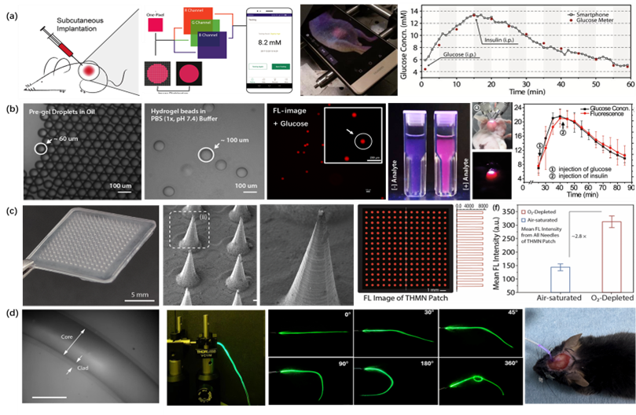

Research Background and Significance
Envisioning the future landscape of human-machine integration, our work centers on “wearable/implantable flexible optoelectronic sensors and biomedical applications.” We are constructing integrated multimodal biosensing architectures combining electrical and optical technologies, developing diverse flexible sensing implants (hydrogel microspheres, microneedles, fibers, patches), and regulating signal/ material/tissue micro-interface structures and properties. This enables in vivo, in situ “acquisition-decoding-regulation” with high signal quality, high channel density, high spatio-temporal precision, and multi-physiological parameter monitoring, aiming to realize human-machine perception and interaction (ACS Nano, 2016, 10, 6769; ACS Nano, 2018, 12, 5176).
Core Methods and Technologies

Figure 1. Human-Machine Interaction System: “Multimodal Acquisition - Analysis Decoding - Precision Regulation.” (a) Implantable nano-fluorescent probes and external smart terminal platforms (e.g., smartphone-based platforms or self-built compact wearable platforms) for real-time monitoring of tissue microenvironment (ISF) biomarkers and disease progression tracking; (b) Minimally invasive injectable microgel (microsphere) sensor implants for real-time monitoring and therapeutic intervention of abnormal metabolism in the tumor microenvironment (TME); (c) Semi-invasive gel microneedle array sensor implants for real-time monitoring of wound tissue microenvironments and healing assessment; (d) Implantable hydrogel fiber sensor implants for real-time sensing and optical/electrical regulation of deep brain local EEG fluctuations and metabolic changes.